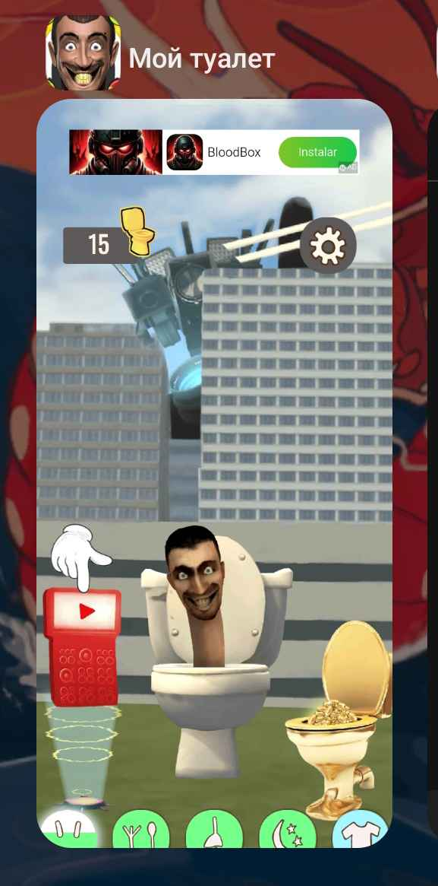
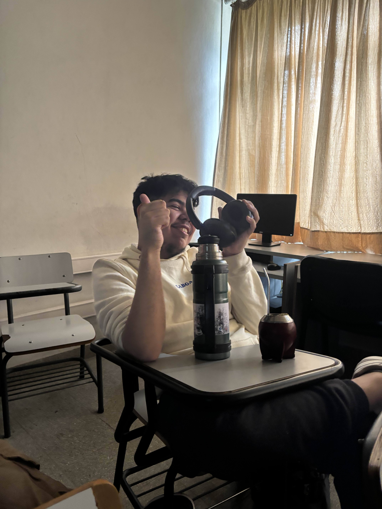

El Misterio de Martín Martínez y Diego
¿Cuidado capilar? ¿Skibidi Toilet? O tal vez... algo más.
¿Quién es Martín?
Algo extraño sucede con Martín Martínez y su mejor amigo paraguayo Diego. Hablan de cuidado capilar y Skibidi Toilet, pero cada vez que mencionan algo, sucede algo... inesperado.
Los secretos de su cuidado capilar
Martín cuida su cabello de una forma especial, que solo revela a quienes se atreven a descubrir su secreto.
- Hidratación profunda: ¿Es eso realmente agua...?
- Evitar el calor excesivo: Pero... ¿qué hay del calor en su mirada?
- El toque paraguayo de Diego: ¿Un ritual de la yerba mate o algo más?
Skibidi Toilet: Un fenómeno paranormal
Martín y Diego no solo ven Skibidi Toilet, ellos lo viven. El ritmo, las risas... ¿o es algo más?
 